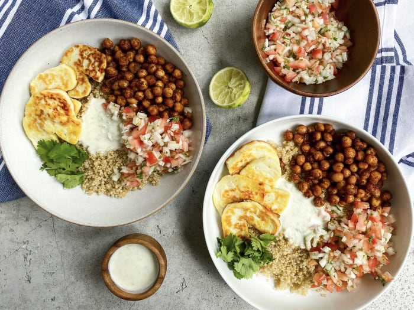
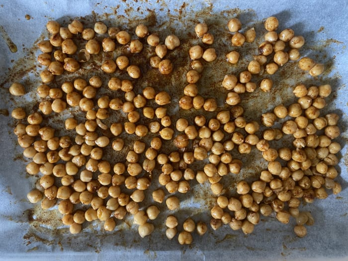

Liste d'ingrédients
Le nécessaire pour la cuisson
Les étapes à suivre pour une recette réussite!

1. Faire les pois chiches croustillants
Préchauffer le four à 425°F et amener une casserole d'eau à ébullition. Étendre les pois chiches sur une plaque de cuisson. Ajouter le mélange d'épices, au goût (attention! épicé) et un filet d'huile d'olive. Si désiré, utiliser une épice appréciée des enfants pour une partie des pois chiche. Saler et poivrer et cuire au four 20-25 minutes.